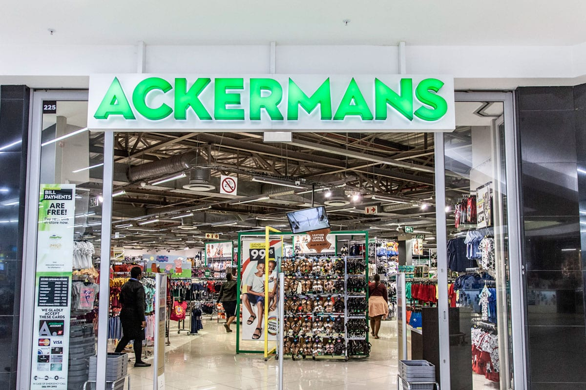
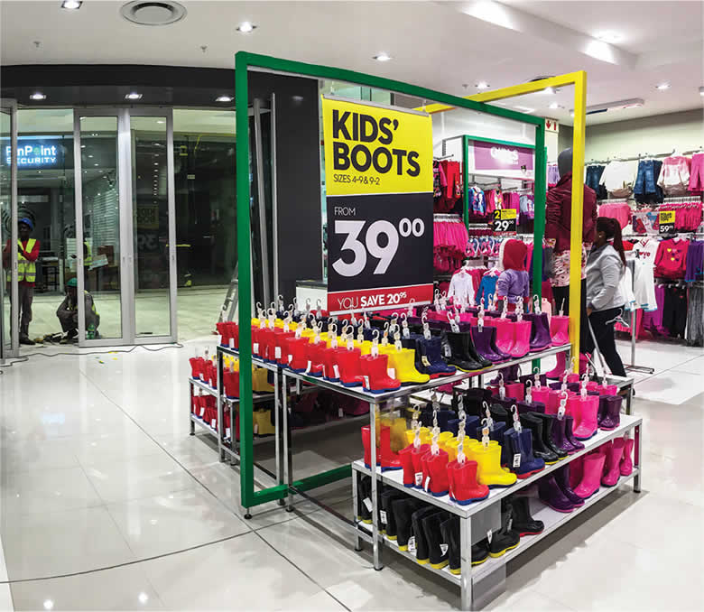

Our story began in 1916 when Gus Ackerman opened the doors to the very first Ackermans store in Wynberg, Cape Town. His vision was simple: making quality products affordable to everyone. Today, there are more than 740 Ackermans stores in five countries, and that vision is at the heart of every single one of them. We know that your family comes first and always will. You should be able to pay less without compromising on quality or style, freeing up cash for the important things in life. It starts with award-winning quality products at unbeatable prices but also includes exciting promotions, easy access to stores and friendly service. We call it Bringing Value to Life and it’s what we work toward every day. Ackermans is committed to making a sustainable impact. We’ve named our CSI programme Ububele, which means kindness and generosity.
Our customers have been at the heart of our story for over 100 years. We’re with you for the balancing act of family life. We understand the pressure on your pockets and we get that every little helps! Our Financial Solutions help manage your budget with various bill payment facilities and we offer a range of payment methods: shop on credit, purchase on lay-by or pay cash in-store.
 